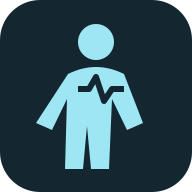

Educational simulation — not medical advice.
This prototype visualizes simplified physiology for learning and product exploration. It does not diagnose, treat, or replace professional medical care.
Personal health files, conversations and check-ins remain in this browser tab's memory. They are not sent to the server or any AI provider. Closing or reloading the tab clears them. This does not make a shared device or browser extension private.
Private session · no health-data account or cloud sync
Educational simulation · not measured health
Overall StatusNominal
Toy homeostasis index100%
Simulation Tick0
System Nominal. I am feeling calm.

Explore organs and their interactions in Anatomy & education.